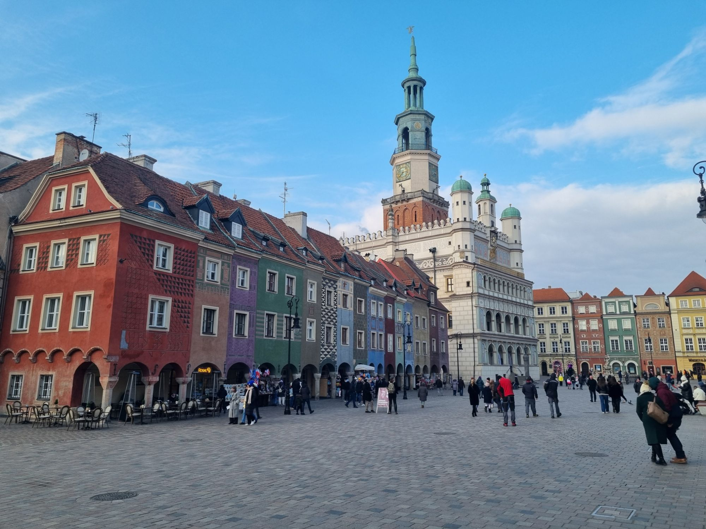

21–29 March 2026
Easter Fair
Stalls with regional delicacies, handicrafts and festive baked goods, plus workshops for children. In 2026 the fair was held on Plac Wolności instead of the Old Market Square.
Plac Wolności (Freedom Square)

Visitor guide
171 checked attractions in eight categories, with opening hours, ticket prices and directions. Plus ready-made itineraries and everything you need to know before you arrive.
Tuesday
Free permanent exhibitions at the National Museum and the Archaeological Museum, among others. Other free days
Monday
Most museums are closed. What to do on Monday
12:00
The goats butt heads every day on the town hall tower. Arrive a few minutes early.
PLN 18
A 24-hour ticket for trams and buses in zone A. You can buy it by card on the vehicle. Ticket prices
First time in Poznań?
The most important sights and the locals' favourite places. Most are in the centre, within walking distance.
 Free
FreeSights and history
The heart of the city since the 13th century. A Renaissance town hall and two goats butting heads at noon.
FreeFor children
Details Cathedral free
Cathedral freeSights and history
The oldest cathedral in Poland. The tombs of the first rulers and the Golden Chapel.
Free
Details Closed Mon
Closed MonSights and history
A multimedia story of the beginnings of the Polish state, opposite the cathedral.
For children
Details Book ahead
Book aheadMuseums
A live show about the St Martin's croissant, just off the Old Market Square. Buy tickets in advance.
For children
Details Free entry
Free entryChurches
A Baroque basilica with a Ladegast organ. Concerts every Saturday at 12:15.
Free
Details Tue free
Tue freeSights and history
The castle of Przemysł II with the Museum of Decorative Arts and a 43-metre viewing tower.
Details Daily
DailySights and history
Wilhelm II's Neo-Romanesque residence from 1905–1910. Today the Zamek Culture Centre.
Details Free
FreeContemporary Poznań
A 19th-century Hugger brewery turned into a centre of shopping and art, with sculptures by Mitoraj and award-winning architecture.
Free
Details Free
FreeParks and nature
An artificial lake with a regatta course. Walks, cycling and things to do all year round.
FreeFor children
Details Free
FreeContemporary Poznań
A three-dimensional mural with a trumpeter on the roof, right next to the Gate of Poznań.
Free
DetailsCategories
Ready-made routes
Routes for 1, 2 or 3 days, with children, for rainy days, for free and for Monday.
If you have only one day, ideally Tuesday to Saturday
For your first day, ideally Tuesday to Saturday
For your second day
For your third day or for fine weather
Families with preschool and school-age children
When it rains or is cold
From November to February, when the days are short
On a limited budget
When most museums have a day off
Planning your visit
From Ławica Airport, buses 148 and 159 run to the station every few minutes.
ZTM ticket prices and how to pay by card on a tram.
Free entry to most museums, and discounts.
Points on the Old Market Square, Kolegiacki Square, at the airport and in the Gate of Poznań.
When to go in for free, and when the museums are closed.
Hospitals, night medical care, a dentist and pharmacies.
Where they are along tourist routes and their opening hours.
Paid parking zones, prices and Park&Ride car parks.
History, legends, dialect, food and weather.
Opera, philharmonic, dance and puppet theatre. What you can follow without Polish.
Calendar
21–29 March 2026
Stalls with regional delicacies, handicrafts and festive baked goods, plus workshops for children. In 2026 the fair was held on Plac Wolności instead of the Old Market Square.
Plac Wolności (Freedom Square)
16 May 2026
One night a year when museums, galleries, theatres and other cultural institutions stay open late and prepare a special programme.
Museums and cultural institutions across the city
28–30 May 2026
The biggest student celebration in the region: three days of concerts on two stages in the park on Łęgi Dębińskie. Admission is ticketed.
John Paul II Park (Łęgi Dębińskie)
4 June – 27 August 2026
A series of free open-air concerts by Lake Rusałka. In 2026: a three-day opening on 4–6 June, then concerts every Thursday from 11 June to 27 August, 33 concerts in all.
Lake Rusałka
11–14 June 2026
A world music festival: artists from many countries and Polish performers of traditional music. In 2026 the 19th edition took place.
Zamek Culture Centre, ul. Święty Marcin 80/82
21–28 June 2026
One of the most important arts festivals in Poland: theatre, dance, music, visual arts and film. Many events take place in streets and squares. In 2026 the festival was opened by a free show by Lake Malta.
Lake Malta and venues across the city
29 July – 2 August 2026
The celebration commemorates the arrival of the Bambers, settlers from around Bamberg. The most important part is the parade in Bamber costumes: in 2026 it went on 2 August from ul. Mostowa to the Old Market Square, where in front of the town hall the historic contract was read out and the figure of the Bamberka was decorated with a garland.
Old Market Square and surroundings
21–23 August 2026
One of the biggest food events in Poland: the Good Taste Fair with regional products, cooking shows, workshops and concerts. In 2026 the 20th edition took place, for the first time on Plac Wolności. Admission is free.
Plac Wolności
4 October 2026
A marathon run through the streets of the city, named after Maciej Frankiewicz, a former deputy mayor of Poznań.
Streets of Poznań
8–25 October 2026
An international competition for young violinists, organised by the Henryk Wieniawski Musical Society in Poznań. Participants from around the world play in successive rounds of auditions, and the competition ends with a final and concerts by the laureates. Tickets are sold by the organiser.
Poznań
8–11 October 2026
A singing competition and concerts devoted to the songs of Agnieszka Osiecka. The programme includes concerts by the finalists, a concert with the jury, the “OFF-SIECKA” concert and a laureates' concert.
Teatr Nowy, ul. Dąbrowskiego 5
23–25 October 2026
A fair of computer games and multimedia entertainment, according to the organiser the largest in Central and Eastern Europe. Admission is ticketed.
Poznań International Fair
11 November 2026
The city's biggest celebration, held since 1994 and organised by the Zamek Culture Centre. It lasts from late morning until evening: a fair of St Martin's croissants, concerts, performances and attractions for families. The Mayor of Poznań hands the keys to the city to St Martin.
ul. Święty Marcin, by the Zamek Culture Centre
14 November – 20 December 2026
A Christmas fair on the grounds of the Poznań International Fair, a few minutes' walk from Poznań Główny station.
Poznań International Fair
20 November 2026 – 6 January 2027
Christmas fairs in the very centre: stalls with decorations, handicrafts and food, performances by artists and workshops for children. It is the only fair the city allows on the Old Market Square.
Plac Wolności and the Old Market Square
22–29 November 2026
A festival of films for children and young people: animations, features and documentaries from around the world. It continues a review begun in 1963. Screenings are ticketed.
Palace Cinema at the Zamek Culture Centre, Helios cinema in Posnania, and Scena Wspólna
11–13 December 2026
An ice sculpture festival: sculptors from several countries create sculptures several metres high from blocks of ice before the eyes of the audience, using chainsaws and chisels. In 2026, 24 sculptors take part.
Old Market Square
26–27 December 2026
27 December is the National Day of the Victorious Greater Poland Uprising. In 2025 the programme was as follows: on 26 December at 15:30 a re-enactment of the arrival of Ignacy Paderewski at the PKP Summer Station, and on 27 December a Mass in the Fara (15:00) and the main ceremony at 16:40, when the alarm sirens are sounded and church bells ring.
Centre of Poznań
12–14 March 2027
A fair of publishers and meetings with authors from Poland and abroad: from crime fiction and reportage to children's literature. The organiser says that the previous edition had 466 author meetings. Admission is ticketed.
Poznań International Fair
15–17 April 2027
A festival of new music: concerts by debutants and well-known performers in a dozen or so clubs and on open-air stages, plus panels and workshops for the music industry.
Clubs and stages across the city
18 April 2027
A 21.097 km run through the streets of the city. In 2026, 13,505 people crossed the finish line.
Streets of Poznań
22–25 April 2027
A motor show: premieres of cars and motorcycles, exhibitions and demonstrations. Admission is ticketed.
Poznań International Fair
23–26 May 2027
A festival of jazz and improvised music on Lake Strzeszyńskie. The artistic director is the pianist Leszek Możdżer. In 2026 the 16th edition took place: 11 concerts over four days.
Lake Strzeszyńskie
18–20 June 2027
A festival of fantasy: games, comics, cosplay, literature, film and series. In 2026 it celebrated its 25th anniversary and had more than 2,000 programme items. Admission is ticketed.
Poznań International Fair
28 June 2027
On 28 June 1956 workers from the Cegielski works went out onto the city's streets, and the protest grew into the first mass opposition to communist rule. The anniversary is marked every year, among other things by laying wreaths at the plaque by the gate of the Cegielski works and at the Poznań June 1956 Monument on pl. Mickiewicza.
The gate of the Cegielski works and the Poznań June 1956 Monument (pl. Mickiewicza)
3–11 July 2027
The largest animated film festival in Poland: about 300 films from around the world, retrospectives and premieres. Since 2017 the winner of the international competition can apply for an Oscar nomination. It is organised by Estrada Poznańska.
Poznań, festival venues in the centre
17–18 July 2027
The open-air summer edition of the Blue Note club: jazz, soul and funk on a stage in the Stary Browar Park. Admission is ticketed.
Stary Browar Park
The nearest dates have not been announced yet. See in the calendar when events usually take place.
Events calendar for the whole year
The current cultural programme: kultura.poznan.pl (in Polish)